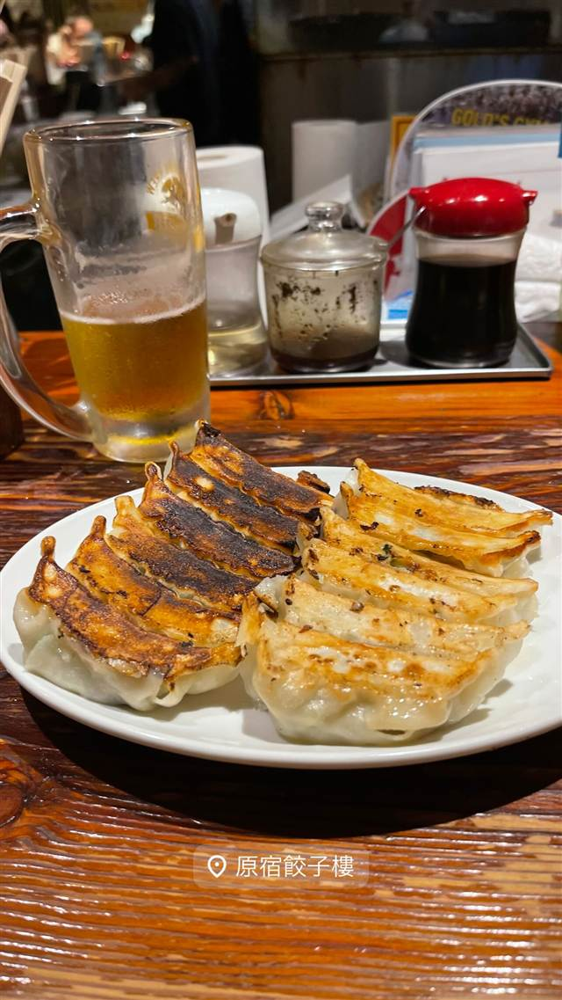

原宿餃子樓（原宿餃子楼）
1975年創業、表参道の路地裏で守る340円の餃子
原宿餃子樓
1975年創業、原宿・表参道の路地裏で50年近く愛される餃子専門店。国産素材にこだわった手頃な価格の焼き餃子・水餃子が名物で、食べログ『餃子 百名店』にも選ばれている。
TRIVIA
へえ、という話
- 餃子1人前(6個)340円という手頃な価格を、表参道の高級店が並ぶエリアで50年近く貫いている
REVIEWS
みんなの声
3.49食べログ
「原宿の立地とコスパの良さ」に注目
- 原宿の一等地にしては値段が安いというコスパの良さを評価する声が多い
- 焼き餃子はパリッと水餃子はもちもちとした食感を評価する声が多い
- ニンニクの有無を選べるなど細やかな配慮を評価する声も見られる
- 店内が手狭で夏は特に暑く混雑時は待つ必要があるという指摘もある
食べログ 口コミ1307件
| 創業 | 1975年創業 |
|---|---|
| 看板 | 焼き餃子（1人前6個、1人前340円）、水餃子 |
| こだわり | 国産素材にこだわった餃子 |
| 掲載・受賞 | 食べログ「餃子 百名店」選出（2021年） |
| どこから | 都心 |
| いつ行けるか | 行列 |
| 予算 | 昼 ～¥999 夜 ¥1,000～¥1,999 |
| 場所 | 明治神宮前駅 東京都渋谷区神宮前6-2-4 岡島ビル1F |
| 注意 | 表参道の路地裏にあり行列必至。持ち帰り可、外国人観光客にも人気 |
食べたもの：餃子とビール / 焼き餃子とビール / 焼き餃子 / 焼き餃子
NEARBY
近い店・同じ系統の店
-
 ★
まぜそば・油そば 明治神宮前
バサノバ 原宿店（BASSANOVA）
和出汁とスパイスを合わせたグリーンカレーソバ
昼 ¥1,000～¥1,999 夜 ¥2,000～¥2,999
★
まぜそば・油そば 明治神宮前
バサノバ 原宿店（BASSANOVA）
和出汁とスパイスを合わせたグリーンカレーソバ
昼 ¥1,000～¥1,999 夜 ¥2,000～¥2,999
-
 ピザ 明治神宮前駅
ピッツァ ケベロス 明治神宮前店 (PIZZA KEVELOS)
美大卒でSAVOY仕込みの店主が焼くナポリピッツァ
昼 ¥2,000～¥2,999 夜 ¥3,000～¥3,999
ピザ 明治神宮前駅
ピッツァ ケベロス 明治神宮前店 (PIZZA KEVELOS)
美大卒でSAVOY仕込みの店主が焼くナポリピッツァ
昼 ¥2,000～¥2,999 夜 ¥3,000～¥3,999
-
 ピザ 明治神宮前
PIZZERIA CANTERA
食べログピザ百名店、全粒粉100%のナポリピッツァ
昼 ¥1,000～¥1,999 夜 ¥4,000～¥4,999
ピザ 明治神宮前
PIZZERIA CANTERA
食べログピザ百名店、全粒粉100%のナポリピッツァ
昼 ¥1,000～¥1,999 夜 ¥4,000～¥4,999
-
 メキシコ 北参道
FONDA DE LA MADRUGADA（フォンダ・デ・ラ・マドゥルガーダ）
内装ごとメキシコから輸入、夕方はマリアッチが生演奏する空間
昼 ¥3,000～¥3,999 夜 ¥6,000～¥7,999
メキシコ 北参道
FONDA DE LA MADRUGADA（フォンダ・デ・ラ・マドゥルガーダ）
内装ごとメキシコから輸入、夕方はマリアッチが生演奏する空間
昼 ¥3,000～¥3,999 夜 ¥6,000～¥7,999
-
 ドリンク 原宿駅／渋谷駅
伊良コーラ 渋谷店
「クラフトコーラ」の言葉を生んだ元祖、製造工房も併設
昼 ～¥999 夜 ～¥999
ドリンク 原宿駅／渋谷駅
伊良コーラ 渋谷店
「クラフトコーラ」の言葉を生んだ元祖、製造工房も併設
昼 ～¥999 夜 ～¥999
-
 ドリンク 原宿（竹下口）
pss‐protein supply stand‐ 原宿店
空気を含ませない真空ミキサーで作るプロテインスムージー
昼 ¥1,000未満 夜 ¥1,000未満
ドリンク 原宿（竹下口）
pss‐protein supply stand‐ 原宿店
空気を含ませない真空ミキサーで作るプロテインスムージー
昼 ¥1,000未満 夜 ¥1,000未満